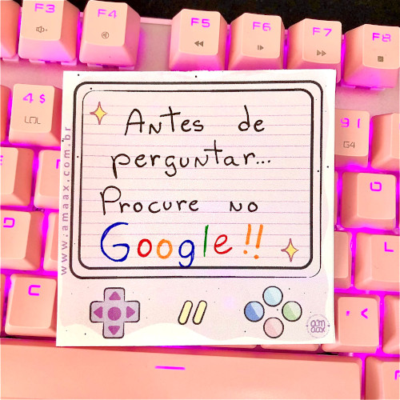

Toxidade, senioridade, cegueira.
A mais recente polêmica no mundinho dev dentro do twitter

Antes de perguntar... Procure no google!
Bora pá treta
Essa imagem despertou nesses últimos dias alguns sentimentos nada legais, eu diria até alguns gatilhos, especialmente um bate-boca no Twitter (ah, conta outra!). Uma pancadaria generalizada, depois que ela foi postada.
O grande questionamento foi: se a pessoa está pedindo ajuda, essa não pode ser a resposta. Uma pessoa com mais experiência, em nossa bolha diremos "com maior senioridade", não deve se comportar dessa maneira. Deve ter um soft-skill suficientemente avançado para acolher e direcionar quem chega com dúvidas.
Justo! Mas, "porém! ai, porém! há um caso diferente", canta o poeta.
Os defensores das soft-skills apedrejaram a autora desse post, que antes de parar de argumentar , deixou alguns smells que merecem ser analisados. O mais importante foi quando ela falou da dificuldade de dar conta das entregas que a empresa exige, e de ter que dar conta dessas ajudas. Anotem isso.
O primeiro e mais evidente é a toxidade do ambiente de TI. A postagem foi tóxica, bastava dar um toque na pessoa, e pessoas mais sensatas assim fizeram. Só que despertou gatilhos de experiências horríveis em muita gente. E muitas reagiram mal.
Quem vem de antes das facilidades dos buscadores online, já deve ter escutado ou recebido como resposta numa lista de discussão o famoso "RTFM", (Read The Fucking Manual). Simples, direto e tóxico, um comportamento presente desde sempre.
Lembrei imediatamente de um filme dos mais importantes de Sean Connery que fala dos Estados Unidos um pouco antes de surgirem organizações sindicais como as conhecemos hoje. Era um momento em que os lutadores sociais eram executados por milícias operando ilegalmente, ou então, enforcados com o devido processo legal. Passa-se no contexto de minas para extração de carvão. Aqui no Brasil o título ficou "Ver-te-ei no Inferno":
https://www.imdb.com/title/tt0066090/
Uma das cenas mais tranquilas e mais importantes é uma partida de futebol entre os times de duas empresas. A partida é disputadíssima, os ânimos acirrados. A coisa descamba para a pancadaria. Os trabalhadores disputam o troféu da competição para levá-lo à empresa.
O único detalhe, dito por um trabalhador mais experiente a um novato, é que as duas empresas, e portanto, os dois times, e portanto, todos os trabalhadores ali, pertencem a um mesmo dono. Não importa quem ganhe aquela briga, quem lucra é o dono. E todos brigam entre si sem saber disso, querendo honrar "a sua empresa".
Qual a razão de eu destacar isso?
Nessa briga sobre a toxidade de mandar alguém googlar, sobre como a maioria dos seniores são tóxicos com as pessoas em início de carreira, parecemos esses trabalhadores brigando para decidir de quem é a culpa de tudo isso.
E a culpa pertence a quem está de fora observando tudo isso e rindo de todos.
Sim, falo por experiência vivida, concreta. Vou contar uma história de um passado horrível.
Já estive em time em que eu era considerado um dos seniores da turma. Tinha que dar conta das minhas entregas e ajudar geral. E muitas vezes esse ajudar significava passar muito tempo mesmo ajudando.
O que considero normal, não apenas normal, mas sim o significado de senior. Ser senior é pilhar, conforme as condições de cada um, os menos experientes e dar condições para que entreguem cada vez mais na mesma faixa de qualidade, e possam crescer conforme vão passando pelos diversos problemas que enfrentam.
Quando os prazos do projeto começaram a apertar, comecei a ser pressionado para não mais prestar essas ajudas, pois deveria me concentrar em minhas entregas e deixar os outros se virarem. Detalhe é que não havia atrasos por conta de codificação, mas sim por trapalhadas administrativas, digamos assim. Óbvio que desconsiderei isso. Projeto entregue.
Mas eis que chega o momento de minha avaliação, adivinhem? :)
Eu deveria aprimorar-me no quesito "dizer não". E, realmente, é uma dificuldade minha. Mas nesse contexto em que eu, considerado o mais resiliente de todos, comecei a ter problemas físicos e após a entrega percebi a volta de uma depressão que não via há anos, posso dizer que fiquei do lado correto. Ajudei meus colegas como pude, focando na entrega do projeto e no crescimento possível de cada um, naquele ambiente altamente tóxico.
Era aqui que eu queria chegar. Devemos sim nos aprimorar nessas questões. Mas há um grande bad smell em tudo isso.
O ambiente é tóxico.
Se é esperado dos seniores que ajudem os mais novos, e esperado dos mais novos que tenham essa ajuda, e não são dadas as condições para que isso ocorra, nada pode dar certo. Teremos traumas, teremos indisposições, teremos a velha toxidade, teremos briguinhas e fofocas, e tretas no twitter. E uma vida miserável.
A saída? Trocar de emprego? Não é tão simples. Mas pode ser a única saída, desde que não seja para entrar em outra empresa do "mesmo dono" ;)